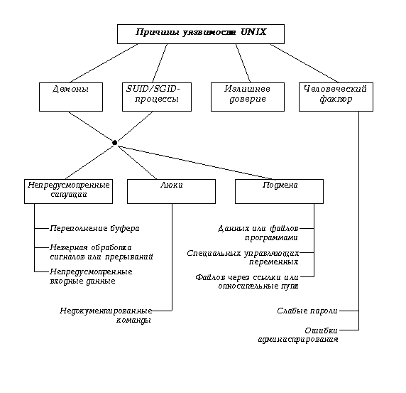

Причины существования уязвимостей в UNIX-системах
(Это параграф из книги "Атака через
Интернет")
Рассмотрев выше достаточно много фактического материала, мы
коснемся причин, по которым описанные нарушения безопасности
UNIX имели место, и попытаемся их классифицировать. Сразу
оговоримся, что эта классификация ни в коей мере не претендует
на новизну или полноту - кому интересна эта тема, предлагаем
обратиться к более серьезным научным работам [9, 23]. Здесь же
мы опишем вполне понятные читателю причины, по которым, тем не
менее, происходит до 90% всех случаев вскрытия
UNIX-хостов.
- Наличие демонов.
- Механизм SUID/SGID-процессов.
Эти механизмы, являющиеся неотъемлемой частью идеологии
UNIX, были и будут лакомым кусочком для хакеров, т. к. в
этом случае пользователь всегда взаимодействует с процессом,
имеющим большие привилегии, чем у него самого, и поэтому
любая ошибка или недоработка в нем автоматически ведет к
возможности использования этих привилегий.
- Излишнее доверие. Об этом уже достаточно говорилось
выше. Повторим, что в UNIX достаточно много служб,
использующих доверие, и они могут тем или иным способом быть
обмануты.
К этим трем причинам нельзя не добавить следующую:
- Человеческий фактор с весьма разнообразными способами
его проявления - от легко вскрываемых паролей у обычных
пользователей до ошибок у квалифицированных системных
администраторов, многие из которых как раз и открывают путь
для использования механизмов доверия.

Рис. 8.2. Причины уязвимости UNIX при атаках на
телекоммуникационные службы.
Рассмотрим теперь более подробно причины, по которым
оказываются уязвимы демоны и SUID/SGID-процессы:
- возможность возникновения непредусмотренных ситуаций,
связанных с ошибками или недоработками в программировании;
- наличие скрытых путей взаимодействия с программой,
называемых "люками" ;
- возможность подмены субъектов и объектов различным
образом.
К первым можно отнести классическую ситуацию с
переполнением буфера или размерности массива (примеры см. п.
8.4.1.2 и 8.6.2), ведущую к затиранию области стека и записи
туда специальных команд, которые будут затем исполнены.
Заметим сразу, что этот способ, несмотря на свою популярность,
всегда будет системозависимым и ориентирован только на
конкретную платформу и версию UNIX.
Хорошим примером непредусмотренной ситуации в многозадачной
операционной системе является неправильная обработка
некоторого специального сигнала или прерывания. Часто хакер
имеет возможность смоделировать ситуацию, в которой этот
сигнал или прерывание будет послано (в UNIX'е посылка сигнала
решается очень просто: командой kill- см. пример
8.6.2).
Наконец, одна из самых распространенных программистских
ошибок является неправильная обработка входных данных (это
является некоторым обобщением случая переполнения буфера.) По
свидетельству [24], ими в 1990 и 1995 годах были подвергнуты
автоматизированному тестированию около 80 программ на 9
различных платформах UNIX ? специальная программа подавала на
вход строки длиной до 100000 символов. Результатом явилось то,
что 25- 33% в 1990 г. и 18- 23% в 1995 г. работали
некорректно: зависали, сбрасывали аварийный дамп и т. п.
(Интересно, что в коммерческих версиях UNIX этот процент
доходил до 43, тогда как в свободно распространяемых он был
меньше 10.) Впрочем, справедливости ради надо отметить, что
только 2 программы-демона вели себя таким образом в 1990 г., а
через 5 лет эти ошибки были исправлены. Ну, а если программа
неправильно обрабатывает случайные входные данные, то
очевидно, что можно подобрать такой набор специфических
входных данных, которые приведут к желаемым для хакера
последствиям. Примером этого может служить innd
(8.6.4).
Люком, или "черным входом" (backdoor) часто называют
оставленную разработчиком недокументированную возможность
взаимодействия (чаще всего входа в систему), например,
известный только разработчику универсальный "пароль" . Люки
оставляют в конечных программах вследствие ошибки, не убрав
отладочный код или вследствие необходимости продолжения
отладки уже в реальной системе в связи с ее высокой сложностью
или же их корыстных интересов. Люки - это любимый путь входа в
удаленную систему не только у хакеров, но и у журналистов и
режиссеров вкупе с подбором "главного" пароля перебором за
минуту до взрыва, но в отличие от последнего способа, люки
реально существуют. Классический пример люка - это, конечно,
отладочный режим в sendmail.
Наконец, вследствие многих особенностей UNIX, таких как
асинхронное выполнение процессов, развитый командный язык и
файловая система, злоумышленниками могут быть использованы
механизмы подмены одного субъекта или объекта другим.
Например, в рассмотренных выше примерах часто применялась
замена имени файла, имени получателя и т. п. именем программы
(см. 8.5.2.3 и 8.5.2.4.3). Аналогично может быть выполнена
подмена некоторых специальных переменных. Так, для некоторых
версий UNIX существует атака, связанная с подменой символа
разделителя команд или опций на символ "/" . Это приводит к
тому, что когда программа вызывает /bin/sh, вместо
него вызывается файл bin с параметром sh в
текущем каталоге. Похожая ситуация возникает при атаке на
telnetd (см. 8.6.1). Наконец, очень популярным в UNIX
видом подмены является создание ссылки (link) на
критичный файл. После этого файл-ссылка некоторым образом
получает дополнительные права доступа, и тем самым
осуществляется несанкционированный доступ к исходному файлу.
Аналогичная ситуация с подменой файла возникает, если путь к
файлу определен не как абсолютный (/bin/sh), а
относительный (../bin/sh или $(BIN)/sh).
Такая ситуация имела место в рассмотренной уязвимости
telnetd.
И последнее - нельзя приуменьшать роль человека при
обеспечении безопасности любой системы. Возможно, он даже
является слабейшим звеном. Про необходимость выбора надежных
паролей уже говорилось. Неправильное администрирование - такая
же актуальная проблема, а для UNIX она особенно остра, т. к.
сложность администрирования UNIX-систем давно уже стала
притчей во языцех и часто именно на это упирают конкуренты. Но
за все надо платить, и это обратная сторона переносимости и
гибкости UNIX. Более того, если говорить о слабости человека,
защищенные системы обычно отказываются и еще от одной из
основных идей UNIX ? наличия суперпользователя, имеющего
доступ ко всей информации и никому не подконтрольного. Его
права могут быть распределены среди нескольких людей:
администратора персонала, администратора безопасности,
администратора сети и т. п., а сам он может быть удален из
системы после ее инсталляции. В результате вербовка одного из
администраторов не приводит к таким катастрофическим
последствиям, как вербовка суперпользователя.
Настройки некоторых приложений, того же sendmail,
настолько сложны, что для поддержания работоспособности
системы требуется специальный человек - системный
администратор, - но даже он, мы уверены, не всегда знает о
всех возможностях того или иного приложения и о том, как
правильно их настроить. И если хакеры смогли проникнуть в
систему, то это не всегда говорит о халатности администратора,
а, зачастую, о его ограниченном знании того или иного
продукта.=